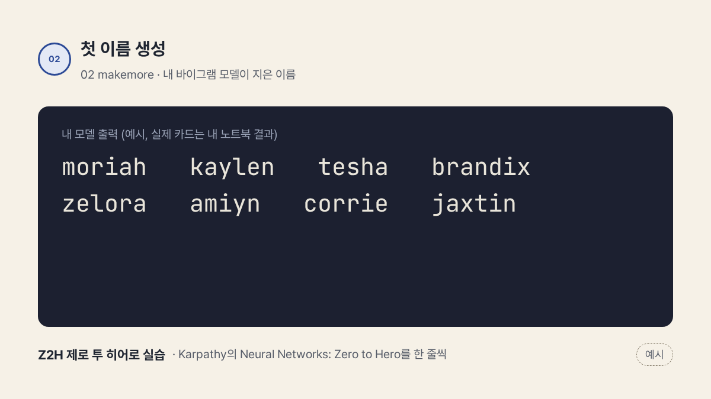

내 배지
실제로 만든 것에만 배지가 생깁니다. 연속 기록 배지는 없습니다. 전체 목록은 명세 참고.
맛보기
첫 기울기더하기의 기울기를 처음 직접 구함11월 16일 받음 (예시)
01
나만의 micrograd01편 익힘11월 16일 받음 (예시)
01
첫 역전파backward() 한 줄로 기울기를 모두 채움11월 16일 받음 (예시)
02
첫 이름 생성내 모델이 처음 지은 이름11월 16일 받음 (예시)
CP1
누적 점검 101~03편 통과아직
05
손으로 역전파loss.backward() 없이 학습아직
07
내 GPT의 첫 글작은 GPT가 처음 쓴 글아직
09
내 토크나이저encode 후 decode가 원문과 같음아직
CP3
수료10편과 누적 점검 3 통과아직
공유 카드 미리 보기

카드에는 내 모델의 출력, 배지 이름, 앱 이름만 들어갑니다. 이메일과 계정 이름은 넣지 않습니다.
X에 공유를 누르면 X의 글쓰기 창이 열리고, 올리기는 내가 직접 누릅니다. 이 앱은 자동으로 올리지 않습니다.